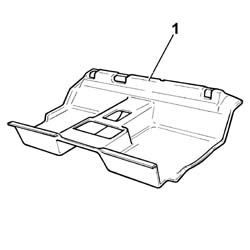

7095E34 passanger compartment rear floor soundproofing panel r r with floor carpet removed
- Path
- Procedures > 70 FITTINGS > 7095 MISCELLANEOUS BODYWORK > 7095E various body insulation elements > 7095E34 passanger compartment rear floor soundproofing panel r r with floor carpet removed
- Kind
- repair procedure (removal / refitting; the operation number is the code)
- Applies to
- all engines; all production periods
- Interactive page
- https://sloeber94.github.io/elrnDB-fDbl/en/#/2585246
Applies to: all engines; all production periods; only with equipment: Doblò trim level
 Removing
Removing
 Refitting
Refitting1. Remove the soundproofing panel from the car, taking care not to disturb the surrounding parts.

Applies to: all engines; all production periods; only with equipment: Doblò trim level
Refitting
RemovingCheck that the panel is undamaged.
Place the panel inside the vehicle.